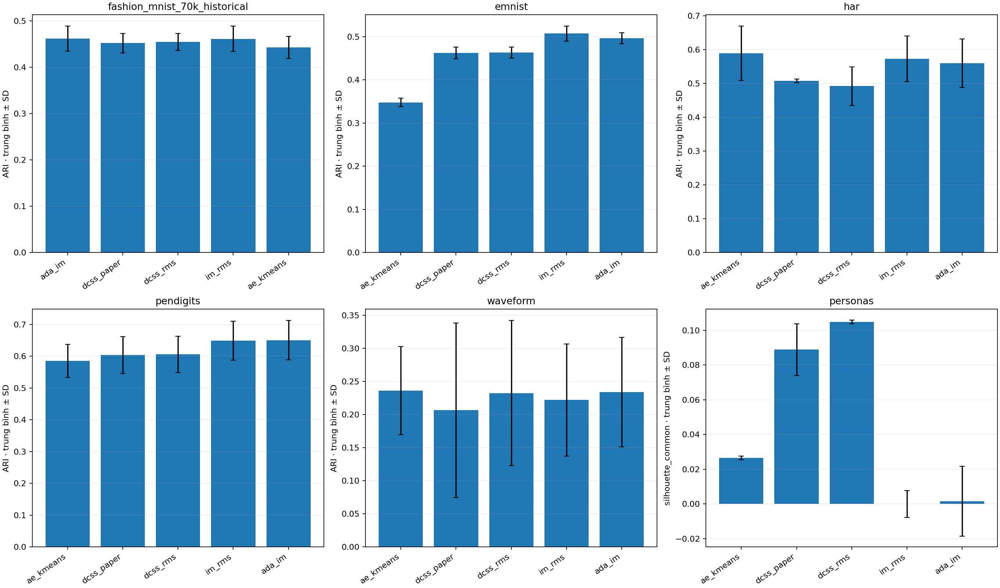

Fashion-MNIST là kết quả cũ được giữ nguyên. Các bộ mới dùng 10 seed, epoch cuối cố định; bảng thiếu seed là tạm thời. ARI/NMI/ACC là tỷ lệ (0,45 = 45%). Chỉ số nội tại dùng cùng đầu vào và cùng 2.000 mẫu đánh giá cho mọi phương pháp. Nemotron không có nhãn chuẩn: ARI giữa các seed chỉ phản ánh độ ổn định, không phải độ đúng.
Kiểm định ghép cặp chính: ADA-IM − IM. Hiệu chỉnh Holm cho 5 bộ bổ sung; không gộp Fashion cũ vào họ kiểm định mới. DB thấp hơn tốt hơn; ARI/NMI/ACC/silhouette/CH cao hơn tốt hơn trong từng bộ và cùng biểu diễn. Đổi phần cứng được ghi lại; không so sánh tốc độ trực tiếp giữa các GPU.

| dataset | completed | expected | complete | campaign_mixed_environment |
|---|---|---|---|---|
| emnist | 50 | 50 | True | False |
| har | 50 | 50 | True | True |
| pendigits | 50 | 50 | True | False |
| waveform | 50 | 50 | True | False |
| personas | 50 | 50 | True | False |
| method | completed_seeds | expected_seeds | complete | ARI_mean | ARI_sample_sd | NMI_mean | NMI_sample_sd | ACC_mean | ACC_sample_sd |
|---|---|---|---|---|---|---|---|---|---|
| ada_im | 10 | 10 | True | 0.461886 | 0.026891 | 0.631254 | 0.017521 | 0.581254 | 0.033303 |
| dcss_paper | 10 | 10 | True | 0.452100 | 0.020996 | 0.648036 | 0.017229 | 0.575133 | 0.028209 |
| dcss_rms | 10 | 10 | True | 0.454474 | 0.018410 | 0.650892 | 0.015840 | 0.576754 | 0.024884 |
| im_rms | 10 | 10 | True | 0.461257 | 0.027189 | 0.630218 | 0.017431 | 0.580959 | 0.033512 |
| ae_kmeans | 10 | 10 | True | 0.442657 | 0.023954 | 0.601540 | 0.014992 | 0.567823 | 0.031955 |
| method | completed_seeds | expected_seeds | complete | ARI_mean | ARI_sample_sd | NMI_mean | NMI_sample_sd | ACC_mean | ACC_sample_sd | silhouette_common_mean | silhouette_common_sample_sd | DB_common_mean | DB_common_sample_sd | CH_common_mean | CH_common_sample_sd |
|---|---|---|---|---|---|---|---|---|---|---|---|---|---|---|---|
| ae_kmeans | 10 | 10 | True | 0.347536 | 0.009888 | 0.606272 | 0.008063 | 0.504631 | 0.013018 | 0.022175 | 0.001570 | 3.188508 | 0.031027 | 18.943493 | 0.157749 |
| dcss_paper | 10 | 10 | True | 0.462487 | 0.013463 | 0.710054 | 0.008541 | 0.572624 | 0.020851 | 0.000127 | 0.004254 | 3.420162 | 0.050176 | 16.377393 | 0.424831 |
| dcss_rms | 10 | 10 | True | 0.463205 | 0.012510 | 0.710131 | 0.006920 | 0.576856 | 0.017390 | 0.003293 | 0.002841 | 3.414625 | 0.049516 | 16.735935 | 0.321529 |
| im_rms | 10 | 10 | True | 0.507089 | 0.017496 | 0.723173 | 0.009149 | 0.620028 | 0.024761 | 0.002590 | 0.002435 | 3.647707 | 0.072415 | 15.993907 | 0.315662 |
| ada_im | 10 | 10 | True | 0.496303 | 0.013023 | 0.722683 | 0.006348 | 0.600379 | 0.018526 | 0.001095 | 0.003084 | 3.557484 | 0.096179 | 16.699277 | 0.558595 |
| method | completed_seeds | expected_seeds | complete | ARI_mean | ARI_sample_sd | NMI_mean | NMI_sample_sd | ACC_mean | ACC_sample_sd | silhouette_common_mean | silhouette_common_sample_sd | DB_common_mean | DB_common_sample_sd | CH_common_mean | CH_common_sample_sd |
|---|---|---|---|---|---|---|---|---|---|---|---|---|---|---|---|
| ae_kmeans | 10 | 10 | True | 0.589521 | 0.080333 | 0.676687 | 0.049316 | 0.717846 | 0.108944 | 0.085660 | 0.021830 | 3.077391 | 0.252255 | 704.685907 | 19.008765 |
| dcss_paper | 10 | 10 | True | 0.507832 | 0.005492 | 0.721526 | 0.005165 | 0.539916 | 0.005689 | 0.279102 | 0.036142 | 1.658800 | 0.170955 | 1263.324829 | 255.295214 |
| dcss_rms | 10 | 10 | True | 0.492048 | 0.056678 | 0.705749 | 0.054345 | 0.524342 | 0.057481 | 0.275567 | 0.055466 | 1.578528 | 0.243526 | 1219.453699 | 277.336869 |
| im_rms | 10 | 10 | True | 0.572727 | 0.067067 | 0.711525 | 0.044439 | 0.645830 | 0.074825 | 0.134819 | 0.027790 | 2.363510 | 0.236498 | 924.401434 | 188.083098 |
| ada_im | 10 | 10 | True | 0.560134 | 0.071675 | 0.686515 | 0.046738 | 0.669075 | 0.102275 | 0.094691 | 0.027822 | 2.681998 | 0.264613 | 770.107104 | 72.093954 |
| method | completed_seeds | expected_seeds | complete | ARI_mean | ARI_sample_sd | NMI_mean | NMI_sample_sd | ACC_mean | ACC_sample_sd | silhouette_common_mean | silhouette_common_sample_sd | DB_common_mean | DB_common_sample_sd | CH_common_mean | CH_common_sample_sd |
|---|---|---|---|---|---|---|---|---|---|---|---|---|---|---|---|
| ae_kmeans | 10 | 10 | True | 0.585543 | 0.052453 | 0.704657 | 0.023605 | 0.728857 | 0.056218 | 0.287111 | 0.020107 | 1.355425 | 0.067887 | 475.749466 | 21.127902 |
| dcss_paper | 10 | 10 | True | 0.604488 | 0.057767 | 0.742315 | 0.023536 | 0.729567 | 0.057339 | 0.296048 | 0.017610 | 1.330395 | 0.058306 | 470.715210 | 18.315415 |
| dcss_rms | 10 | 10 | True | 0.605920 | 0.057539 | 0.743210 | 0.023375 | 0.730850 | 0.056542 | 0.296046 | 0.017941 | 1.321430 | 0.062705 | 474.993753 | 15.455202 |
| im_rms | 10 | 10 | True | 0.648789 | 0.061139 | 0.769110 | 0.028701 | 0.762200 | 0.058665 | 0.292058 | 0.019548 | 1.379391 | 0.046788 | 474.895621 | 17.059573 |
| ada_im | 10 | 10 | True | 0.650604 | 0.061862 | 0.771125 | 0.030260 | 0.762773 | 0.058539 | 0.292149 | 0.019461 | 1.379364 | 0.045237 | 474.778867 | 17.740380 |
| method | completed_seeds | expected_seeds | complete | ARI_mean | ARI_sample_sd | NMI_mean | NMI_sample_sd | ACC_mean | ACC_sample_sd | silhouette_common_mean | silhouette_common_sample_sd | DB_common_mean | DB_common_sample_sd | CH_common_mean | CH_common_sample_sd |
|---|---|---|---|---|---|---|---|---|---|---|---|---|---|---|---|
| ae_kmeans | 10 | 10 | True | 0.236281 | 0.066757 | 0.341455 | 0.092900 | 0.516560 | 0.030896 | 0.207192 | 0.063368 | 1.698284 | 0.569666 | 667.096856 | 193.356277 |
| dcss_paper | 10 | 10 | True | 0.206553 | 0.131650 | 0.277241 | 0.161999 | 0.500680 | 0.096114 | 0.195056 | 0.042394 | 1.546802 | 0.060534 | 614.785915 | 151.369522 |
| dcss_rms | 10 | 10 | True | 0.232417 | 0.109682 | 0.316392 | 0.134953 | 0.510760 | 0.072717 | 0.195246 | 0.054938 | 1.689858 | 0.529697 | 624.859382 | 161.303642 |
| im_rms | 10 | 10 | True | 0.222076 | 0.084542 | 0.319618 | 0.122798 | 0.508000 | 0.061921 | 0.211833 | 0.045552 | 1.562391 | 0.134985 | 676.800157 | 153.263210 |
| ada_im | 10 | 10 | True | 0.234064 | 0.082565 | 0.337056 | 0.118511 | 0.503960 | 0.063235 | 0.227556 | 0.003249 | 1.516326 | 0.020991 | 727.713901 | 10.211006 |
| method | completed_seeds | expected_seeds | complete | silhouette_common_mean | silhouette_common_sample_sd | DB_common_mean | DB_common_sample_sd | CH_common_mean | CH_common_sample_sd |
|---|---|---|---|---|---|---|---|---|---|
| ae_kmeans | 10 | 10 | True | 0.026457 | 0.000989 | 3.672555 | 0.025974 | 43.323802 | 0.040681 |
| dcss_paper | 10 | 10 | True | 0.088902 | 0.014957 | 2.976484 | 0.189393 | 167.980419 | 76.023382 |
| dcss_rms | 10 | 10 | True | 0.104857 | 0.001070 | 2.804511 | 0.157007 | 218.183133 | 74.580507 |
| im_rms | 10 | 10 | True | -0.000079 | 0.007678 | 4.715356 | 0.529491 | 37.249302 | 2.222071 |
| ada_im | 10 | 10 | True | 0.001472 | 0.020090 | 4.250452 | 0.631373 | 52.875909 | 8.924712 |
| dataset | comparison | metric | paired_seeds | complete | planned_primary | campaign_mixed_environment | confirmatory | n | mean_delta | sd | ci95_low | ci95_high | sign_flip_p_two_sided | holm_p_family5 | interpretation |
|---|---|---|---|---|---|---|---|---|---|---|---|---|---|---|---|
| emnist | ada_im - im_rms | ARI | [0, 1, 2, 3, 4, 5, 6, 7, 8, 9] | True | True | False | False | 10 | -0.010786 | 0.009851 | -0.017833 | -0.003739 | 0.011719 | 0.058594 | planned comparison; inspect CI, valid-seed counts, mixed hardware and representation limits; no automatic thesis claim |
| har | ada_im - im_rms | ARI | [0, 1, 2, 3, 4, 5, 6, 7, 8, 9] | True | True | True | False | 10 | -0.012594 | 0.068112 | -0.061318 | 0.036131 | 0.582031 | 1.000000 | planned comparison; inspect CI, valid-seed counts, mixed hardware and representation limits; no automatic thesis claim |
| pendigits | ada_im - im_rms | ARI | [0, 1, 2, 3, 4, 5, 6, 7, 8, 9] | True | True | False | False | 10 | 0.001815 | 0.003259 | -0.000516 | 0.004147 | 0.121094 | 0.484375 | planned comparison; inspect CI, valid-seed counts, mixed hardware and representation limits; no automatic thesis claim |
| waveform | ada_im - im_rms | ARI | [0, 1, 2, 3, 4, 5, 6, 7, 8, 9] | True | True | False | False | 10 | 0.011988 | 0.031507 | -0.010551 | 0.034527 | 0.250000 | 0.750000 | planned comparison; inspect CI, valid-seed counts, mixed hardware and representation limits; no automatic thesis claim |
| personas | ada_im - im_rms | silhouette_common | [0, 1, 2, 3, 4, 5, 6, 7, 8, 9] | True | True | False | False | 10 | 0.001551 | 0.026635 | -0.017502 | 0.020605 | 0.857422 | 1.000000 | planned comparison; inspect CI, valid-seed counts, mixed hardware and representation limits; no automatic thesis claim |